life decoders
Explore the World & Adventure in Science
Lab W |
We are a group of scientists from
🏫 ZJU-UoE Institute
working on decoding puzzles in bio-medical sciences. Topics we are interested in include
epigenetic
regulation of transposable elements in stem cells and cancer,
genomics
technology and
bioinformatic
algorithm development.
By combining both
"wet lab"
(experimental 🔬) and
"dry lab"
(computational 💻) approaches, we hope to provide our unique expertises in advancing our understandings for bio-medical sciences.
我们是一群来自浙江大学爱丁堡大学联合学院 🏫的生物医学方向的科学家。我们研究的内容包括干细胞细胞命运决定中的 表观遗传调控机制， 基因组学大数据挖掘以及 生物信息算法及工具 的开发。我们实验室由一群来自生物学、临床医学、基础医学、生物医学以及生物信息学不同学科背景的博士后、研究生、科研助理及本科生组成。通过”干实验“（计算相关 💻）以及”湿实验“（实验技术 🔬）相结合的手段，我们希望以我们独特的视角来研究生物医学中重要的科学问题。


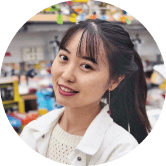
Assistant Professor, ZJU-UoE institute, Zhejiang University
📧 wanluliu@intl.zju.edu.cn 👩🏻💻 Personal Homepage @ ZJU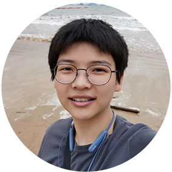
M.S., Clinal Medicine (Ophthalmology), Wenzhou Medical University
📧 siqianjin@intl.zju.edu.cn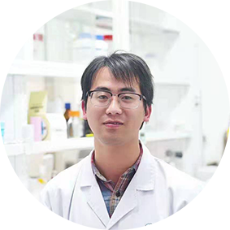
M.S., Clinical Medicine (Surgery), Zhejiang University
📧 dfruan@zju.edu.comMajor in Biomedical science, ZJU-UoE Institute, Zhejiang University
📧 lize.17@intl.zju.edu.cnMajor in Biomedical science, ZJU-UoE Institute, Zhejiang University
📧 ziwei.17@intl.zju.edu.cn Personal website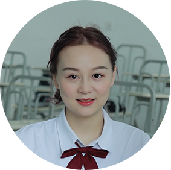
Major in Bioinformatics, Huazhong Agricultural University
📧 ruonan.21@intl.zju.edu.cn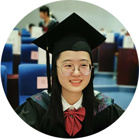
Major in Marine Biology, Hohai University
📧 yuhui.23@intl.zju.edu.cnMajor in Biotechnology, Harbin Institute of Technology
📧 weikai.23@intl.zju.edu.cnMajor in Information Management and Information System, China Pharmaceutical University
📧 22360240@zju.edu.cnMajor in Bioengineering, Ningbo Tech University
📧 luyao.24@intl.zju.edu.cn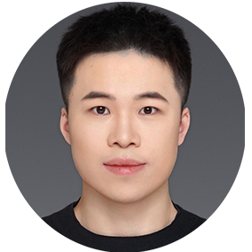
Major in Management and information system, University of Manchester
📧 jiongxin.23@intl.zju.edu.cn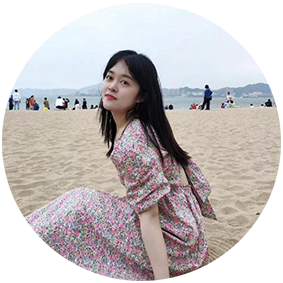
Major in pharmacy, Jilin University
📧 xirui1.22@intl.zju.edu.cnB.Mgt., Business Administration, Ningbo University
📧 chengc1@intl.zju.edu.cnMajor in Traditional Chinese Pharmacy, Shanghai University of Traditional Chinese Medicine
📧 sly220@outlook.comMajor in Bioinformatics, ZJU-UoE Institute, Zhejiang University
📧 bingkang.22@intl.zju.edu.cnMajor in Bioinformatics, ZJU-UoE Institute, Zhejiang University
📧zhouyue.23@intl.zju.edu.cnMajor in Biomedical Informatics, ZJU-UoE Institute, Zhejiang University
📧anni.21@intl.zju.edu.cnMajor in Biological Sciences, ZJU-UoE Institute, Zhejiang University
📧hongan.21@intl.zju.edu.cnM.S., Biochemistry and Molecular Biology, Shanghai University
📧junzhou@intl.zju.edu.cn B.S., Biomedical Science, Zhejiang University
B.S., Biomedical Science, University of Edinburgh
Major in Biomedical Sciences, ZJU-UoE Institute, Zhejiang Univeristy
📧 shiqix.18@intl.zju.edu.cnMajor in Bioinformatics, ZJU-UoE Institute, Zhejiang Univeristy
📧 Valeria.18@intl.zju.edu.cnMajor in Bioinformatics, ZJU-UoE Institute, Zhejiang Univeristy
📧 Hanqi.18@intl.zju.edu.cnMajor in Bioinformatics, ZJU-UoE Institute, Zhejiang Univeristy
📧 yanran.18@intl.zju.edu.cnMajor in Biomedical Science, ZJU-UoE Institute, Zhejiang University
📧 houwei.18@intl.zju.edu.cn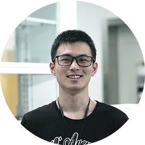
Major in Bioinformatics, ZJU-UoE Institute, Zhejiang University
📧 jingkai.19@intl.zju.edu.cn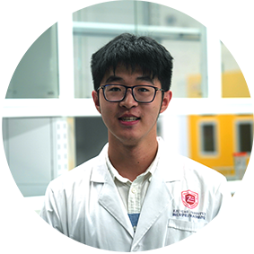
Major in Bioinformatics, ZJU-UoE Institute, Zhejiang University
📧 weijian.19@intl.zju.edu.cnMajor in Bioinformatics, ZJU-UoE Institute,Zhejiang University
📧 pengshan.19@intl.zju.edu.cn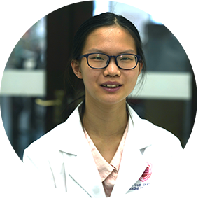
Major in Bioinformatics, ZJU-UoE Institute, Zhejiang University
📧 lingyuan.19@intl.zju.edu.cnMajor in Bioinformatics, ZJU-UoE Institute, Zhejiang Univeristy
📧 lanqi.18@intl.zju.edu.cnMajor in Bioinformatics, ZJU-UoE Institute, Zhejiang Univeristy
📧 jiayi.18@intl.zju.edu.cn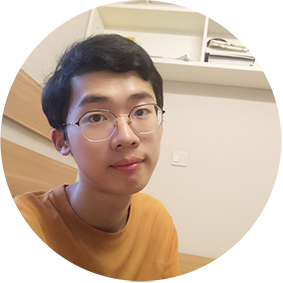
Major in Bioinformatics, ZJU-UoE Institute, Zhejiang University
📧 yiweiz.18@intl.zju.edu.cnMajor in Biomedical Science, ZJU-UoE Institute, Zhejiang University
📧 zhihengjia.17@intl.zju.edu.cnMajor in Biomedical Science, ZJU-UoE Institute, Zhejiang University
📧 ge.17@intl.zju.edu.cnMajor in Bioinformatics, ZJU-UoE Institute, Zhejiang University
📧 yixing.18@intl.zju.edu.cnMajor in Bioinformatics, ZJU-UoE Institute, Zhejiang University
📧 zhikai.18@intl.zju.edu.cnMajor in Bioinformatics, ZJU-UoE Institute, Zhejiang University
📧 jingrui.20@intl.zju.edu.cnMajor in Biomedical Science, ZJU-UoE Institute, Zhejiang University
📧 jinchun.18@intl.zju.edu.cnPh.D. in Stem cell and regenerative medicine, Zhejiang University
📧 linjunxin@zju.edu.cnB.Eng., Bioinformatics, Southwest JiaoTong University
📧 yixinguon@zju.edu.cnMajor in Bioinformatics, ZJU-UoE Institute, Zhejiang University
📧 yaqi.19@intl.zju.edu.cn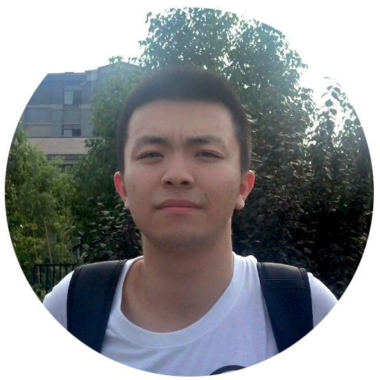
Major in Bioinformatics, ZJU-UoE Institute, Zhejiang University
📧 ruihong.19@intl.zju.edu.cnMajor in Bioinformatics, ZJU-UoE Institute, Zhejiang University
📧 xinyue.20@intl.zju.edu.cn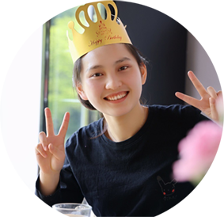
Major in Bioinformatics, ZJU-UoE Institute, Zhejiang University
📧 shiyao.19@intl.zju.edu.cnMajor in Bioinformatics, ZJU-UoE Institute, Zhejiang University
📧 meiting.19@intl.zju.edu.cnMajor in Clinical medicine, Nanjing Medical University
📧 22118103@zju.edu.cnMajor in Bioinformatics, ZJU-UoE Institute, Zhejiang University
📧 yutongh.20@intl.zju.edu.cnB.Eng.,Bioengineering, Beijing University of Chemical Technology
📧 bing.22@intl.zju.edu.cnMajor in Bioinformatics, ZJU-UoE Institute, Zhejiang University
📧 Zhejian.19@intl.zju.edu.cnMajor in Biological Sciences, Zhejiang University
📧 hongchen.24@intl.zju.edu.cnRAD - Region Associated DEG is a web tool to identify region associated differentially expressed genes.
The Human Antigen Receptor Database.
The germlineTE single-cell dataset visualizer.
An integrated expression atlas of human musculoskeletal system.
A314, ZJU-UoE Institute,
718 East Haizhou Rd., Haining, Zhejiang 314400, P.R. China
email:
wanluliu@intl.zju.edu.cn
A314, 浙江大学爱丁堡大学联合学院
浙江省海宁市海州东路 718 号，邮编：314400
电子邮箱：wanluliu@intl.zju.edu.cn
We are alwasys looking for motivated and creative researchers specialized in
Molecular
Biology, Cellular Biology,
Bioinformatics, Computer
Science,
Statistics and Engineering
to join us.
If you are interested in being part of the Lab W, please send your CV and a short research interests to wanluliu@intl.zju.edu.cn
Positions
available
are : postdocs, graduate students, research assistants , undergraduate research interns.
感谢您对我们实验室的兴趣，我们实验室长期欢迎不同背景包括分子生物学、细胞生物学、生物信息学、计算机科学、统计学、和工科背景的博士后、研究生、科研助理、本科生加入我们。如果你对加入我们感兴趣，欢迎您发送一份简历（CV）以及一段简短的研究兴趣到wanluliu@intl.zju.edu.cn
Wanlu Liu is an Assistant Professor in the ZJE institute at Zhejiang University. She is a former postdoctoral researcher in the department of Molecular Cellular and Developmental Biology at the University of California, Los Angeles, where she received a Ph.D. in molecular biology from the Molecular Biology Institute. She is passionate about building bioinformatics tools, mining big genomics data, and uncovering epigenetic mechanisms. She enjoys painting, photography, and playing badminton. She dreams of one day going pro in photography.
刘琬璐，浙江大学爱丁堡大学联合学院助理教授、研究员、博士生导师。本科毕业于浙江大学基础医学国家理科基地班，取得医学学士学位。博士毕业于美国加州大学洛杉矶分校。研究兴趣为：构建生物信息学分析工具、挖掘基因组学大数据以及探索表观遗传调控机制。在学术与教学以外，她还喜欢画画、摄影以及羽毛球。曾在某游戏中连抽600张神秘符咒不出SSR从而达成”非洲大阴阳师“称号。
Siqian Jin is a PhD student at Zhejiang University, ZJU-UoE institute. She gained a M.S. (Ophthalmology) from School of Ophthalmology & Optometry, Wenzhou Mecdical University. Three years'research training in Laboratory for Stem Cell & Retinal Regeneration let her specialize in stem cell related experiments. She has a wide range of hobbies, especially Chinese chess, woodworking, Kendo, and running.
金飔倩，浙江大学爱丁堡大学联合学院博士生。本科毕业于山东大学临床医学院临床医学专业。硕士毕业于温州医科大学眼视光学院、生物医学工程学院眼科学专业。她擅长干细胞相关实验，尤其是胚胎干细胞。她业余爱好广泛，比较喜欢中国象棋，木工手工，剑道，长跑，另外还很喜欢吃各种小吃美食。
Dengfeng Ruan is a PhD student majoring in orthopedics at Zhejiang University School of Medicine. He obtained a M.S. in Surgery and recived standardized residency training in The Second Affiliated Hospital, Zhejiang University School of Medicine. And he now receives scientific research training in Lab W. His research intersects include development/regeneration of musculoskeletal system and biology of mesenchymal stem cells. He enjoys traveling and experiencing various cultures, sights and lives. He also had a wide-range interests in cooking, reading, handicraft and so on.
阮登峰，浙江大学医学院外科学（骨科）博士生。本科毕业于温州医科大学临床医学专业，硕士毕业于浙江大学医学院外科学专业，并于浙江大学医学院附属第二医院完成住院医师规范化培训。目前他在实验室接受联合培养，研究方向为运动系统的发育与再生以及间充质干细胞的分化命运调控。他的业余爱好广泛，对做饭、手工、羽毛球、乒乓球等都有兴趣，另外他喜欢旅行去见各种新的风景。
Xinyu Xiang is a PhD student majoring in bioinformatics at ZJE institution of Zhejiang University. She obtained an Applied Bioscience' Degree from College of Agriculture and Biotechnology in Zhejiang University. By making use of multi-omics data integration analysis as well as stem cell cultivation and induction techniques, she is exploring the mechanism of stem cell and early embryo development. Ms.Xiang has a wide range of interests, she likes experience local culture while traveling and tries to be an avid gym goer.
相欣雨，浙江大学爱丁堡大学联合学院生物信息学博士生。本科毕业于浙江大学农业与生物技术学院。她的研究方向是：利用多组学数据整合分析与挖掘和干细胞培养与诱导技术探索干细胞与早期胚胎发育调控机制。她喜欢说走就走的旅行，同时也是健身房养老型选手。
Bing Gao is a PhD Student of bioinformatics at Zhejiang University. He graduated from Beijing University of Chemical Technology and majored in Bioengineering. He currently engaged in protein purification in the laboratory. He loves sports, fitness + various ball sports, especially running and trail, and often participates in marathon and trail running events.
高兵是浙江大学生物信息学专业的博士生，本科毕业于北京化工大学生物工程专业，目前在实验室从事蛋白纯化工作。他热爱运动，健身 + 各种球类运动，尤其喜欢跑步和Trail，经常参加马拉松赛事和越野跑赛事。
Ziwei Xue is a PhD student major in bioinformatics at ZJE institution of Zhejiang University. My research interests include: Developing bioinformatic applications to analyze multi-omics data. I love exploring unknown in the field of bioinformatics, and I also enjoy designing graphics and websites. Coding is my both professional and amateurish habit. I am quite an Otaku so try not bother me when I am not busy (unless...)
我是浙江大学浙江大学生物信息学专业的博士生。研究兴趣为：通过生物信息学的手段，开发相关的程式/算法解决多组学分析的问题。我喜欢探索生物信息学领域的未知事物，也喜欢平面设计和构建好看的网站。Coding是我专业和业余的爱好。是个现充，所以在我不忙的时候不要打扰我（除非是帅哥美女）。🏸🎾可约。
Lize Wu is a PhD student majoring in immunology and bioinformatics at Zhejiang University School of Medicine. He obtained the bachelor degree in biomedical science from Zhejiang University. His research interests are developing bioinformatic tools to analyze immunology-related data and revealing immunological mechanism by both dry- and wet-lab approaches. Lize is facinated with travelling and flying.
吴利则，浙江大学医学院免疫学与生物信息学交叉培养博士生，本科毕业于浙江大学并获得生物医学学士学位。利则的研究兴趣是开发生物信息学工具用以挖掘分析免疫学相关数据，以及使用湿实验和干实验的手段研究免疫学机制。生活上，利则十分着迷于旅行以及和飞行有关的事情。
Xinyi Chen is a Master Student of bioinformatics in the ZJE institute at Zhejiang University. She graduated from College of Agriculture and Biotechnology, Zhejiang University. Her research interests are using bioinformatics, molecular and cellular approaches to study the development/diseases of musculoskeletal system. She is a person who loves life and likes traveling and photography in her spare time. Traveling around the world is her biggest dream.
陈心怡，浙江大学爱丁堡大学联合学院生物信息学专业硕士生。本科毕业于浙江大学农业与生物技术学院。研究兴趣为：利用生物信息学、分子生物学和细胞生物学等多学科交叉手段研究间充质干细胞的分化命运调控。她是个热爱生活的人，空闲时间喜欢旅游和摄影，环游世界是她最大的梦想。
Ruonan Tian is a PhD Student of bioinformatics in the ZJE institute at Zhejiang University. She graduated from Huazhong Agricultural University, majoring in bioinformatics. For her, learning or trying something new is an enjoyable thing. Doing research and exploring new research fileds are also what she enjoys . She loves various sports, such as badminton, basketball and so on. Besides, she is a fangirl who changes idols frequently.
田若楠，浙江大学爱丁堡大学联合学院生物信息学专业博士生，本科毕业于华中农业大学信息学院生物信息学专业。对于她来说，尝试新东西是一件很快乐的事情，因此她也喜欢做研究。她喜欢各种运动，比如羽毛球、篮球、跑步等，同时她还是一个换墙头非常频繁的追星女孩，漂亮的小姐姐和小哥哥令她感到愉悦。
Yuhui Chen earned her Bachelor's degree in Marine Biology from Hohai University and is currently pursuing a Master's degree in Bioinformatics at the Zhejiang University-University of Edinburgh Institute. With a keen aspiration to make intriguing discoveries, she is fueled by curiosity and a profound passion for the world. Yuhui enjoys reading, painting, watching movies, and attending theatrical performances in her leisure time. Solitude, for her, is a joyful avenue for self-reflection.
陈雨卉，本科毕业于河海大学海洋生物专业，现硕士就读于浙江大学爱丁堡大学联合学院生物信息学专业。她对世界充满好奇和热爱，希望能找到一些有趣的发现，业余时间喜欢读书绘画，也喜欢电影和戏剧，对她来说，独处是一种非常快乐的自我交流方式。
Weikai Shi is a Master Student of biology in the ZJE institute at Zhejiang University. He graduated from Harbin Institute of Technology with a bachelor degree in biotechnology. His recent research is focus on revealing human embryonic stem cells heterogeneity. He has broad interests, especially basketball, table tennis and some other ball games. Also, he loves lovely cats and dogs.
石玮凯，浙江大学爱丁堡大学联合学院生物学硕士生。本科毕业于哈尔滨工业大学生命科学与技术学院。他当前的研究方向是：利用谱系追踪技术揭示人类胚胎干细胞的异质性。他兴趣爱好广泛，喜欢篮球、乒乓球等各种球类运动；也喜欢可爱的喵星人和汪星人。
Guo Linnan is a master student in pharmaceutical engineering from the College of Engineering, Zhejiang University. She has a bachelor's degree in information management and information systems from China Pharmaceutical University. She hopes to help others by improving her profession. Besides work and study, she enjoys reading, sports and comedy. Spending time with family and friends and tasting various foods also make her feel happy.
国林楠，浙江大学工程师学院制药工程专业硕士研究生，本科毕业于中国药科大学信息管理与信息系统专业。她希望能够通过精进专业从而帮助他人。工作学习之余，她喜欢阅读、运动和喜剧，与亲友相处以及品尝各种美食也令她觉得人间值得。
Jiongxin Wang is a PhD Student of bioinformatics in the ZJE institute at Zhejiang University. He graduated from Hohai University with a bachelor's degree and a master's degree in management and information systems from the University of Manchester. His research interests include: the application of deep learning on multi-omics data and algorithm development. As for hobbies, Jiongxin is interested in various sports and coffee.
王炅鑫，浙江大学爱丁堡大学联合学院生物信息学专业博士生，本科毕业于河海大学，硕士毕业于曼彻斯特大学管理与信息系统专业。研究兴趣为：深度学习在多组学数据上的应用。生活中，他热爱各类体育运动和咖啡。
Li Ziyang is a joint Ph.D. student in Bioinformatics at the ZJE institute of Zhejiang University and Clinical Medicine at Zhejiang University. He graduated from Shandong University with a master's degree in Clinical Medicine. He has a cheerful personality and enjoys various sports activities such as basketball, swimming, and table tennis. Beyond the confines of academia and athletics, he passionately embraces the rhythmic pedals of cycling and the culinary delights of gastronomy.
李子阳，浙江大学爱丁堡大学联合学院生物信息学与浙江大学临床医学联合培养博士生，研究生毕业于山东大学临床医学专业。他性格开朗，喜欢篮球、游泳、乒乓球等各类体育活动。同时，他也热衷于骑行和美食，美丽的风景和可口的食物是最吸引他的事物。
Yin Xirui is a Ph.D. student majoring in Biochemistry and Molecular Biology at ZJE. She received her bachelor's degree in Food Science and Engineering from Northeast Agricultural University and her master's degree in pharmacy from Jilin University. Her current research interests are T cell receptors. She is an optimistic person about life, loves to explore different fields, and likes to watch movies and travel to different cities.
殷夕芮，浙江大学爱丁堡大学联合学院生物化学与分子生物学专业博士生，本科毕业于东北农业大学食品科学与工程专业，硕士毕业于吉林大学药学专业，目前的研究方向为T细胞受体的研究。她是一个对生活积极乐观的人，热爱探索不同的领域，平时喜欢看电影和去不同的城市旅行。
Yutong Huang, an undergraduate student majoring in Bioinformatics at the Zhejiang University-University of Edinburgh Institute, plans to pursue a Ph.D. in Biology directly in the future. She enjoys singing, playing the piano, and dancing. Additionally, she likes reading novels and following K-pop in her leisure time.
黄雨彤，浙江大学爱丁堡大学联合学院生物信息学专业本科生，未来选择直接攻读生物学博士。她爱好唱歌、钢琴、舞蹈等，业余时间还喜欢阅读小说和关注kpop。
Bingkang Zhao, an undergraduate student majoring in Bioinformatics at the Zhejiang University-University of Edinburgh Institute. Currently, his research interests lie in the application of deep learning in biology. Besides work and study, he has a passion for Pokémon and reptiles. In his spare time, he enjoys playing Pokémon Trading Card Game (ptcg).
赵炳康，浙江大学爱丁堡大学联合学院生物信息学专业本科生，目前研究兴趣为深度学习在生物领域的应用，他喜爱宝可梦及爬行类，业余时间喜欢玩宝可梦卡牌。
Luyao Zhang, Master of Biomedicine, Edinburgh United College, Zhejiang University. She graduated from Ningbo Institute of Technology, Zhejiang University with a bachelor's degree, majoring in bioengineering. One year after she graduated from undergraduate course, she worked as an R&D assistant for protein purification. She likes music, visiting shops and discovering new things in life.
张璐瑶，浙江大学爱丁堡联合学院生物医学硕士在读。本科毕业于浙大宁波理工学院，生物工程专业。本科毕业后的一年担任蛋白纯化方向的研发助理。喜欢音乐，喜欢去探店，发现生活中的新鲜事物。期待与大家共同交流，一起解锁更多新知识。
Hongchen Zhu, graduated from Zhejiang University with a bachelor's degree in Biological Sciences and is currently pursuing Master of Biomedicine, Edinburgh United College, Zhejiang University. He engages in research related to human embryonic stem cells. He enjoy reading and music, as well as watching interesting movies and TV dramas, or engaging in some solitude and contemplation.
朱洪辰，本科毕业于浙江大学，生物科学专业。目前浙江大学爱丁堡联合学院生物医学硕士在读，从事人类胚胎干细胞相关方面的研究。他爱好读书和音乐，也喜欢看一些有趣的电影和电视剧，或者进行一些独处与思考。
Zhouyue Zhu, an undergraduate majoring in Bioinformatics at the ZJU-UoE Institute. He always maintains curiosity about novel things and is full of passion for life. He loves photography and enjoys taking his camera out to capture brilliant moments in life.
朱周越，浙江大学爱丁堡大学联合学院生物信息学本科生。他永远对新奇的事物保持好奇心，对生活充满热爱。他热爱摄影，喜欢带着相机出去走走，喜欢在生活和旅途中记录眼中看到的美好瞬间。
Anni Gao is an undergraduate student majoring in Biomedical Informatics at Zhejiang University-University of Edinburgh Institute. Currently, she is working on data analysis and processing related to transposons in early embryonic development. She is positive about life and keeps curious about new things. To relax, she likes to sing and listen to music. She also likes to do all kinds of handicrafts to immerse herself in her own time.
高安妮，浙江大学爱丁堡大学联合学院生物信息学专业本科生。目前致力于早期胚胎发育中转座子相关的数据分析处理工作。她积极面对生活，对新鲜事物保持好奇心。生活中，她喜欢唱歌和听音乐放松心情，也喜欢做各种手工沉浸度过属于自己的时间。
Hong'an Chen is an undergraduate biomedical student at the ZJU-UoE Institute in Zhejiang University. She has a habit of finding beauty in the quiet and solitude of daily life. In her free time, she enjoys watching musicals, through which she explores new languages and cultures. She sees this as a wonderful way to broaden her horizons.
陈虹安，浙江大学爱丁堡大学联合学院生物医学本科生。她习惯在平静和独处中发现生活的美好。生活中，她爱好观看音乐剧，由此接触新的语言和文化，拓展视野。
Chen Cheng is an administrative assistant in Lab W. She obtained a Bachelor of Management degree in Business Administration from Ningbo University. She loves crafts and reading, and appreciates all things beautiful.
陈程，浙江大学爱丁堡大学联合学院刘琬璐课题组行政助理。本科毕业于宁波大学工商管理专业。她喜欢手工和书，以及一切美丽的事物。
Sun Luyao is a research assistant in Lab W. She earned bachelor's degree in Chinese Pharmaceutical Preparation from Beijing University of Chinese Medicine and master's degree in Chinese Materia Medica from Shanghai University of Traditional Chinese Medicine. She currently engaged in T cell receptor studies in the laboratory. She is an outgoing and cheerful person who enjoys trying new things. In the free time, she loves listening to music and engaging in sports.
孙璐瑶，浙江大学爱丁堡大学联合学院刘琬璐课题组科研助理，本科毕业于北京中医药大学中药制药专业，硕士毕业于上海中医药大学中药学专业，目前在实验室参与T细胞受体的研究。她是一个活泼开朗的人，喜欢尝试新鲜事物，平时的爱好是听音乐和运动。
Jun Zhou works as a research assistant in the laboratory. He holds a Bachelor’s degree in Biological Science from Hefei Normal University and a Master’s degree in Biochemistry and Molecular Biology from Shanghai University. He has a keen interest in various sports.
周骏，实验室科研助理。本科毕业于合肥师范学院生物科学专业，硕士毕业于上海大学生物化学与分子生物学专业。他对各类运动抱有浓厚兴趣。


{kind=link}
{kind=link}
{kind=link}
{kind=link}
{kind=link}
{kind=link}
{kind=link}
{kind=link}
{kind=link}
{kind=link}
{kind=link}
{kind=link}
{kind=link}
{kind=link}
{kind=link}
{kind=link}
{kind=link}
{kind=link}
{kind=link}
{kind=link}
{kind=link}
{kind=link}
{kind=link}
{kind=link}
{kind=link}
{kind=link}
{kind=link}
{kind=link}
{kind=link}